Production Flow Help
Goal > Update the production flow board so the editor does not miss the artifacts and produces the output
Editor Start Node > https://miro.com/app/board/uXjVKR5-Ces=/
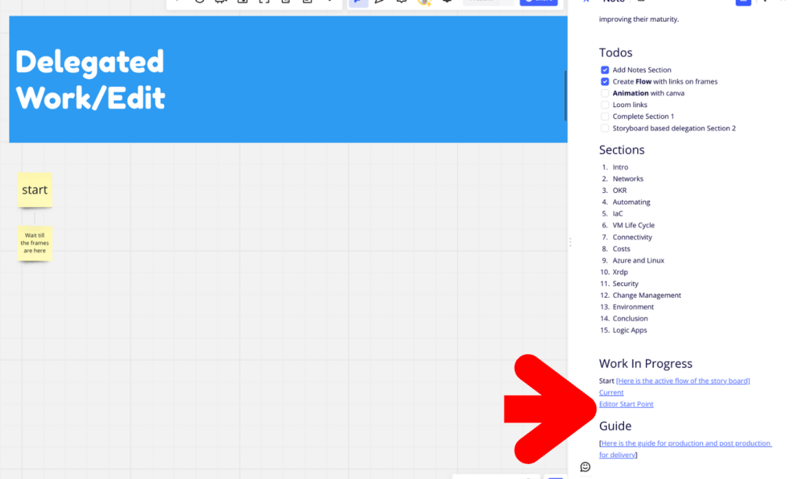
Add output fileName >>> added as comment to all > https://app.frame.io/reviews/8c45547a-2b6f-4cf9-8163-17bc74e40b6f/a022c685-a947-414f-9619-59a7e31c742f
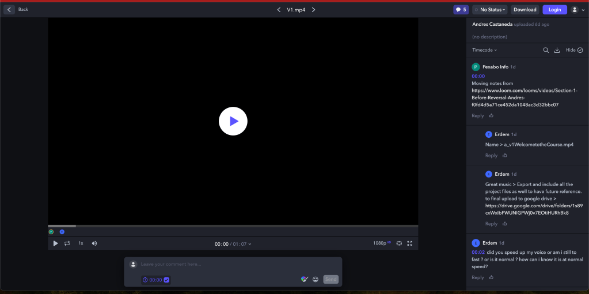
watch and put the names for the outputs
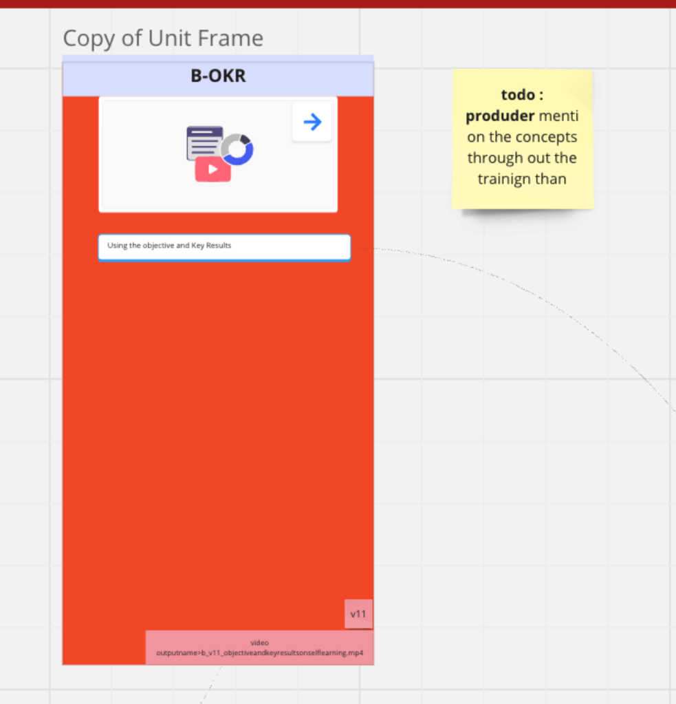
Producer todos as well in the action >>> if i dont leverage the blooms taxonomy >>> imagine and remember with Lacan than the self learning tech is lost why do we talk on it than ! Gap in my production >>> which means i cant really over load with content it is better to touch base a smaller topic and work on the self learning techniques for the audience to have the firwst principles.
maybe placing numbers would help them with the flow not just the arrows( links )
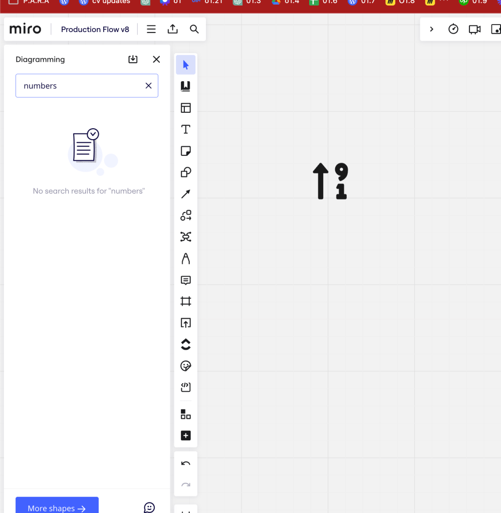
post it notes are easier thinking it with gpt now
To add numbers from 1 to 100 to a Miro board, you can follow these steps to create a visual representation of these numbers in an organized way:
-
Open or Create a Miro Board:
-
If you don't already have a Miro account, you'll need to sign up at miro.com.
-
Once you have an account, either create a new board or open an existing one where you want to add the numbers.
-
Choose a Method to Display Numbers:
-
Text Tool: You can use the text tool to manually type each number. This might be feasible if you're not actually entering all 100 numbers or if you want to display them in a specific way.
-
Sticky Notes: This is a visually appealing way to display numbers, as each number can be on a different colored note. It's ideal for grouping or organizing numbers in a visual layout.
-
Table: If you want a more structured layout, you might use the table tool to create rows and columns, then fill them with numbers sequentially.
-
Automating with the API:
-
If entering the numbers manually is too time-consuming, and you're comfortable with scripting, Miro offers an API that can be used to automate tasks on a board. You could write a script to automatically populate a board with numbers from 1 to 100.
-
For more information about the Miro API, you can visit the Miro Developers Platform.
-
Bulk Entry Techniques:
-
To minimize manual entry, you can prepare the list of numbers in a spreadsheet or text editor, then copy and paste them into Miro. Depending on the tool in Miro (like sticky notes or text boxes), the pasted content might need to be adjusted for optimal visual arrangement.
-
Organize Your Board:
-
Once you have all the numbers on your Miro board, you can use various tools to align, distribute, or group them. Miro offers alignment tools and the ability to group objects together, which can help in organizing the board to your preference.
-
Save and Share:
-
Ensure that you save your board periodically while working. Miro boards are typically autosaved, but it's good practice to check. Once done, you can share your board with others if needed.
Using these steps, you can efficiently add and organize numbers from 1 to 100 on your Miro board.
ask ai
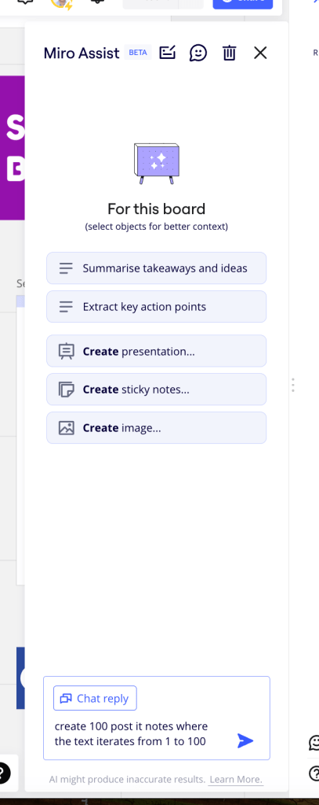
maybe 6789 not needed inside it is enough
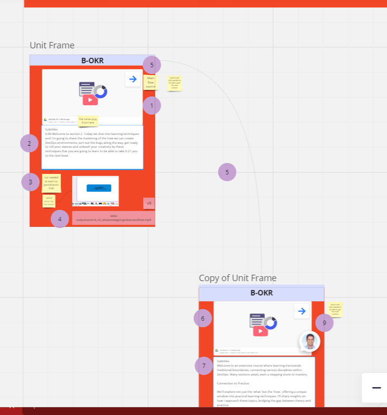
miro supports visual link to hurray
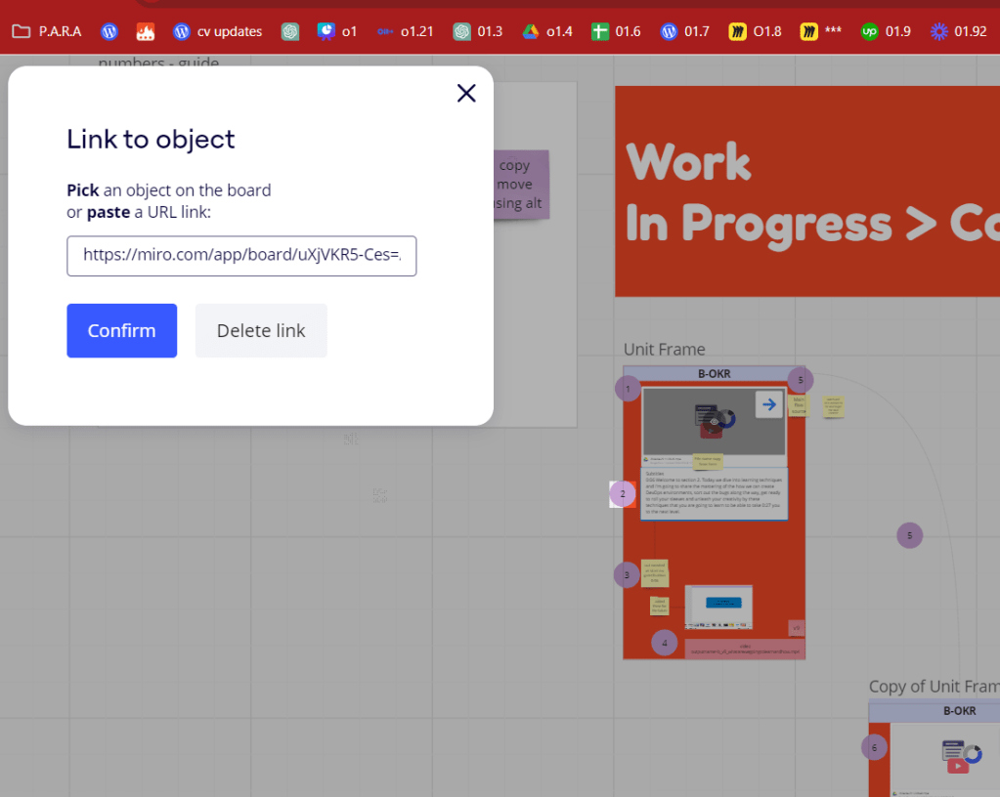
short cuts
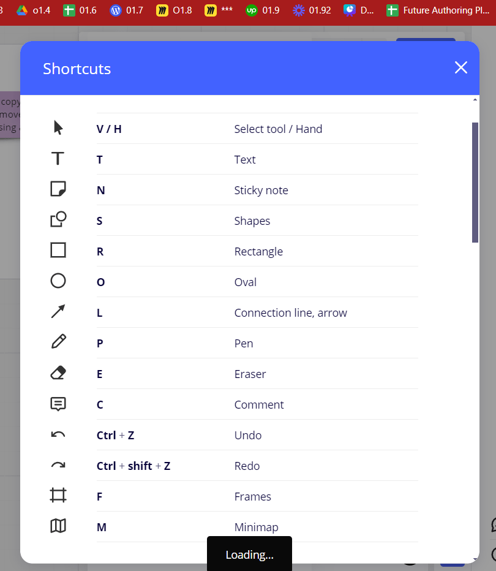
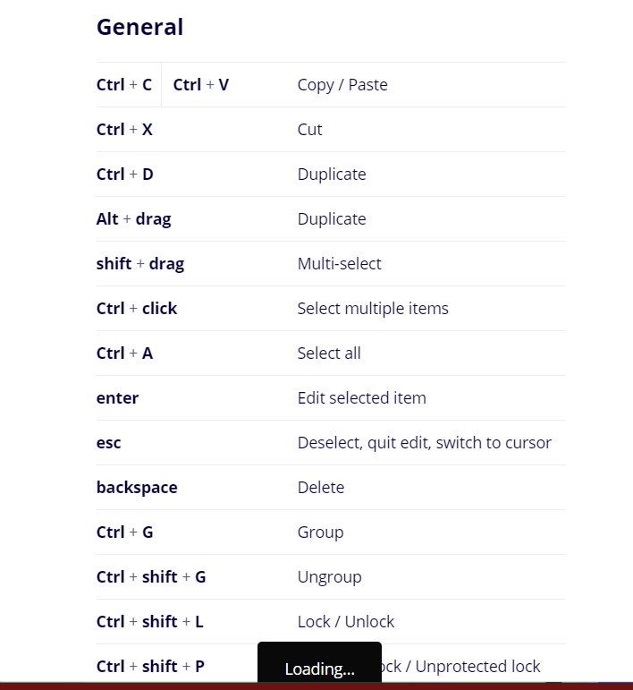
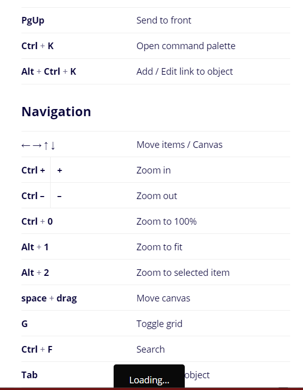
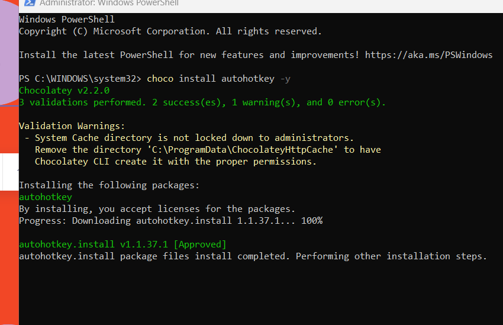
F1::^!k
To set up AutoHotkey to remap F1 to Ctrl+Alt+K, you can create a simple script. Here's how you can do it:
-
Install AutoHotkey if you haven't already. You can download it from https://www.autohotkey.com/.
-
Once installed, right-click on your desktop or any folder, then go to New > AutoHotkey Script. Give it a name like "F1_to_CtrlAltK.ahk".
-
Right-click on the newly created script file and choose Edit Script.
-
In the script editor, paste the following code:
F1::^!k
-
Save the script and close the editor.
-
Double-click the script file to run it. You should see a green "H" icon in your system tray, indicating that the script is running.
Now, whenever you press F1, it will act as if you've pressed Ctrl+Alt+K.
Remember, AutoHotkey scripts run in the background, so you don't need to keep the script editor open after you've saved your changes. If you ever want to stop the script, right-click on the green "H" icon in the system tray and choose Exit.
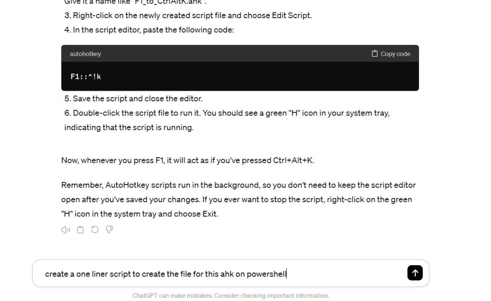
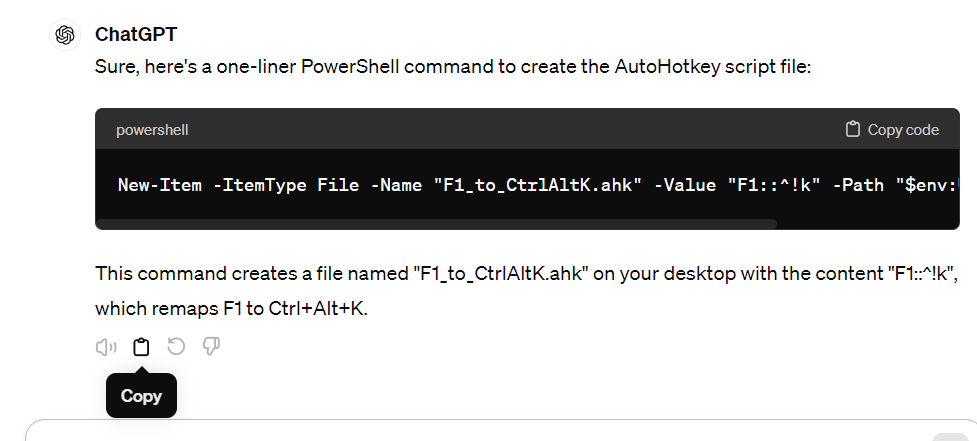
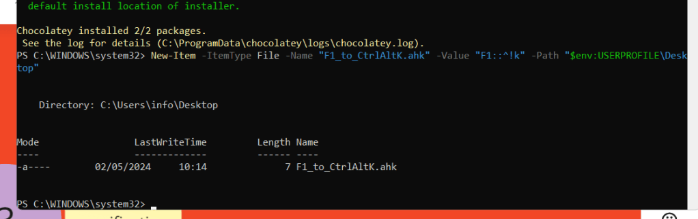
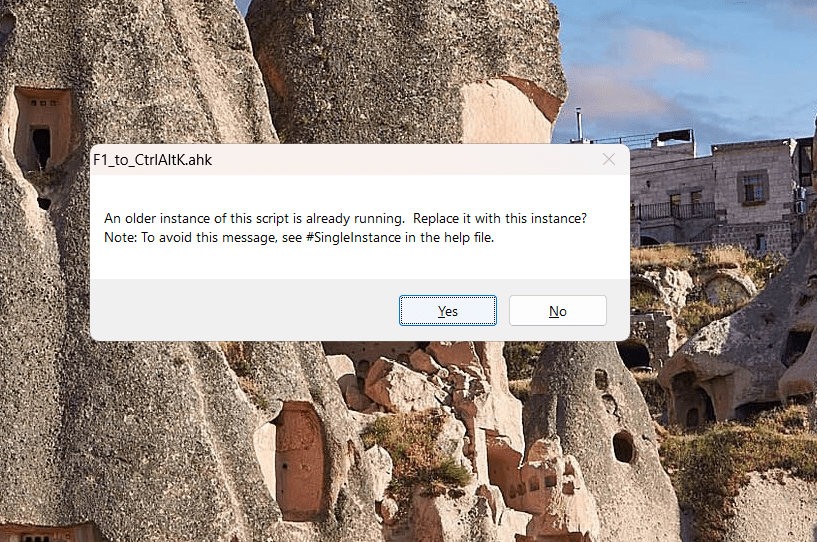
PRETTY FAST SETUP
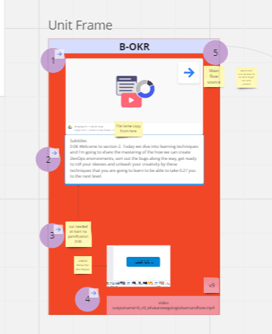
FLY IN THE MAP
https://community.chocolatey.org/packages/joytokey
did not work >
remap
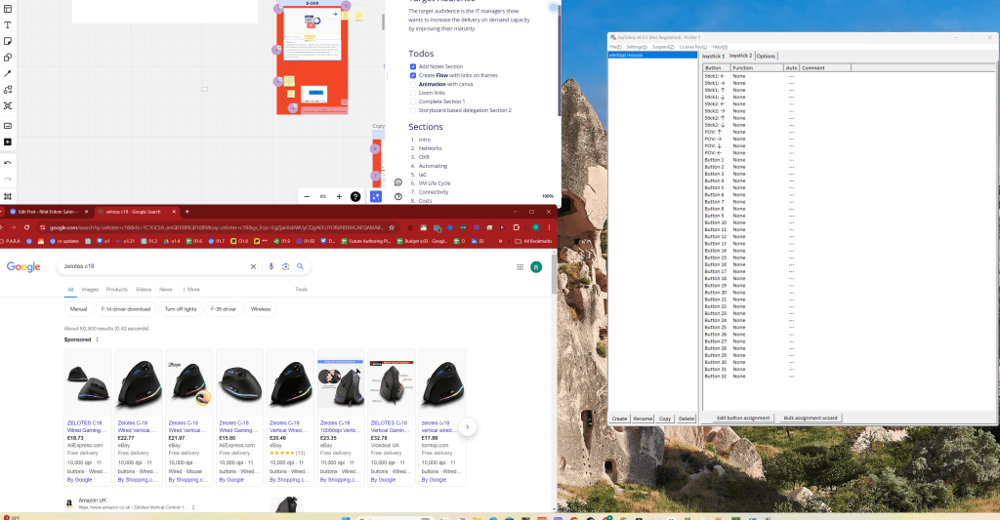
http://zelotes.cn/en/Downloads/104_14_1.html
Play recording has the link > https://miro.com/app/board/uXjVKR5-Ces=/?playRecording=240352db-dfd8-441a-80c0-461af68eae91
it does not record like obs so limitated in the moves that is done on the board!
overriden the revisions
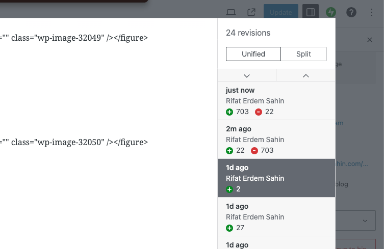
Imported from rifaterdemsahin.com · 2024